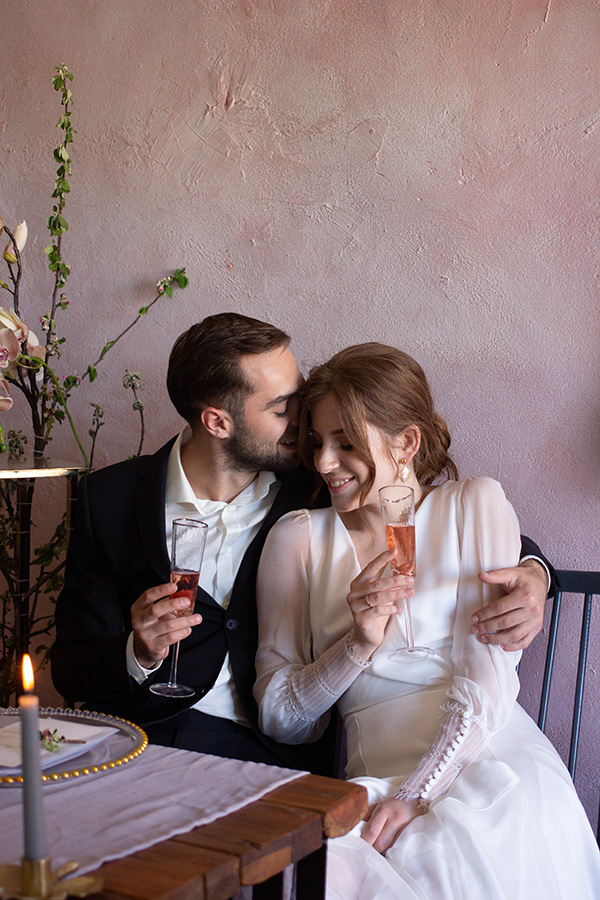
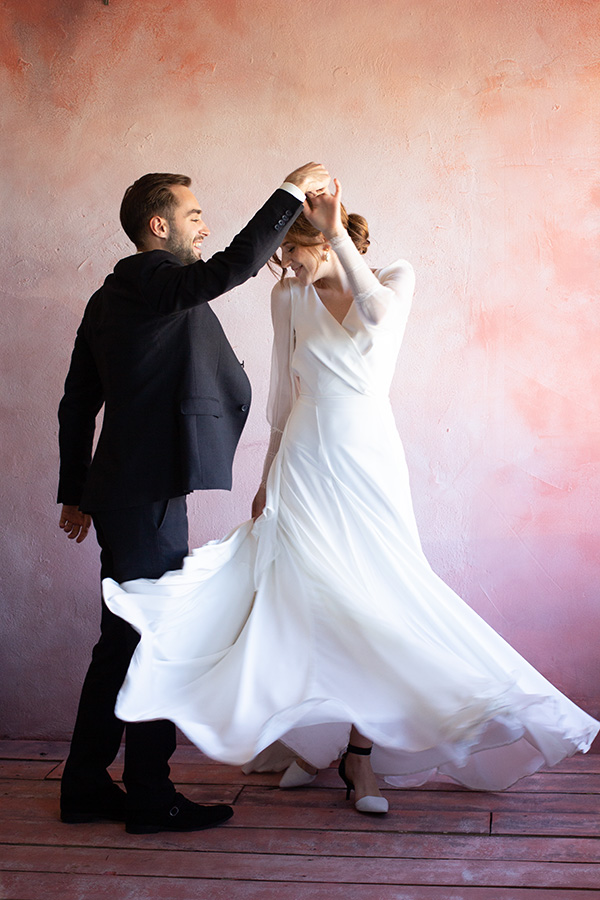
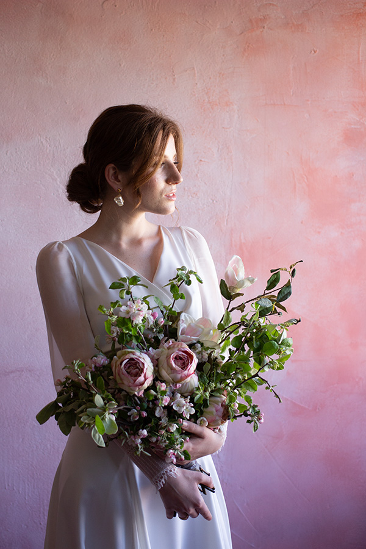

Liliya Melnikova
liliya.camilla@me.com
+380980013338
Passionate and experienced Wedding Photographer with over ten years of experience photographing weddings and providing clients with precious visual memories. Dedicated to working closely with clients to understand their photography goals and desires prior to their wedding. Bringing forth superior photography skills, knowledge of various photographic styles, editing expertise, and excellent customer service skills.
Employment History
Wedding Photographer at Jane Doyle Photography (March 2014 - September 2019)
- Provided consultations with wedding clients to discuss photography desires and expectations prior to entering into a contract.
- Created slideshows and visual presentations to educate clients on styles, options, and inspirations.
- Photographed events in a professional manner, without disrupting the ambience of the space.
- Used my advanced photography skills to produce high quality photographs.
Wedding Photographer at Marriot Events (June 2008 - April 2014)
- Served as a staff Wedding photographer and worked alongside other staff to provide optimal customer service to clients.
- Organized and coordinated engagement and wedding shoot schedules.
- Uploaded final images to private web galleries for client use and enjoyment.
- Worked to maintain positive client relationships, resulting in many client referrals.
Education
Bachelor of Communications at Molliy College (August 2004 - May 2008)
High School Diploma at Frencis Prepatory School (September 2000 - May 2004)
Skills
Excellent Communication Skills, Artistic Vision, Customer Service Skills, Creative Problem Solving, Time Management Skills
  